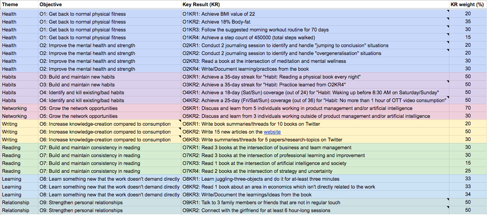

This article describes the approach I’m following to set personal goals for myself, in the form of Objectives and Key-results (OKR).
If you are new to OKR, scroll down to the Resources section for more details.

A publically available worksheet for my personal OKRs for January-February-March 2021 is available here.
I’ve worked them out in order to:
I will continue updating this article and the attached document in case of any changes or updates. If you want to discuss more, or in case of any feedback, please reach out to me at @hackpravj
Start with the themes representing the different areas of life. For example, in your case, it can be Personal-finance, Health, Creativity, and more. You can have your own personal reasons behind selecting the final themes.
Here are the 7 separate themes in my current plan.
For each of the themes, I came up with a backlog of aspirations and ideas.
This has helped me connect the ideas with each other if there is any such possibility, OR ruling out ideas that are duplicate to each other.
Some of the themes or ideas that didn’t make it to the current plan, will be considered during the next quarter’s OKRs.
To come up with the objectives associated with the themes, ask yourself
As a rule-of-thumb, objectives are ambitious and qualitatively represent an end state. It’s more of an outcome, rather than an output.
For example, if you’ve selected “Health” as one of the themes, the following can be an objective for you:
Once you’ve decided your objective, the key-results will be a mechanism to show your progress towards that objective.
To come up with the key-results associated with the objective, ask yourself
Key-results are milestones that will move you closer to the objective if achieved.
Considering the earlier example of the Objective (Get in a better shape), here are two representative key-results:
Once you know the key-results, ask yourself the following question to come up with the initiatives:
One of the common mistake during OKR planning is; ignoring the difference between the initiatives/key-results.
For example, consider the first key-result (Reduce weight by 10 kilograms), there can be different initiatives (that you can do to reach the milestone set by the key-result).
As you’re moving ahead with your OKR planning, you need to ensure that you’re regularly measuring your progress.
If you work at the intersection of Product-Management and Artificial-Intelligence, I would love to connect and exchange notes with you regarding your experience/learnings.
If you want to discuss more, or in case of any feedback, please reach out to me at @hackpravj